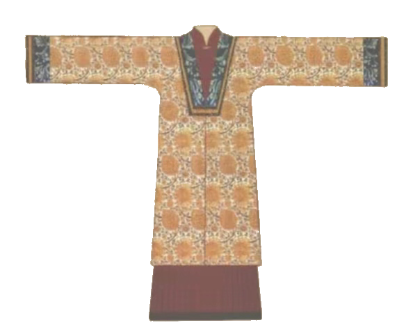

《
明时期女子衣服的形制
在明朝，皇后、皇妃等贵族女性的服饰尤为讲究。她们的礼服通常由袆衣、霞帔、背子等组成，上面绣有精美的纹饰图案，展现出华丽端庄、典雅高贵的气质。
明朝女子服饰的基本形制包括上衣下裳、袄裙、披风、比甲等。
上衣下裳是指上衣和下裳分开穿着，上衣多为交领或直领，下裳多为褶裙或马面裙。
袄裙则是上衣下裙的组合，上衣为交领袄，下裙多为马面裙或褶裙。
披风是一种对襟直领的外衣，大多直领对襟，颈部系带，披风的领型有各种各样，如立领、翻领、直领、盘领等。
比甲则是一种无袖、无领的对襟两侧开衩及至膝下的马甲，其样式通常较后来的马甲要长，一般长至臀部或至膝部，有些更长，离地不到一尺，又叫做“背心”。最初宋朝的一种汉服形制，无袖侧开叉及膝。后来明朝时期，比甲盛行，成为明朝女子的主要服饰之一。
明朝女子还有凤冠霞帔的形制。凤冠是一种以金玉为主的首饰，其形状类似帽子，但有所不同的是凤冠的顶部通常有一些凤凰的装饰。霞帔则是一种类似披肩的饰品，通常由彩锦或丝绣制成，上面也有一些凤凰或其他图案的装饰。这种服饰制度体现了明朝时期女性地位的提高和对于美的追求。
女性服饰的款式和色彩都非常丰富多样，这其中最有特色的要数“比甲”了。
“比甲”是一种无袖、无领的对襟马甲，它的主要特征是将后片垂直剪下，缝于前片中心，从而将领口与对襟部分分开。这种服饰不仅穿着方便，而且能够展现出女性的身形线条。 据传，明宣宗朱瞻基的皇后孙氏就非常喜欢穿着比甲。她曾经亲自设计了一种新的比甲款式，将后片剪成一个燕尾形状，使其更加符合人体曲线。这种款式迅速流行开来，成为了当时女性追逐的时尚。
明朝女性还喜欢穿着“霞帔”和“流苏”等服饰。霞帔是一种类似披肩的服饰，通常用锦绣制成，色彩鲜艳、图案精美。流苏则是指在服饰边缘或袖口处垂挂的一串串流苏，这些流苏通常用丝线或珠子制成，不仅有装饰作用，还能够增添女性的柔美气质。
明朝女性还喜欢在头上佩戴各种头饰，如凤冠、花钗等。这些头饰通常用金、银、玉等制成，上面镶嵌着各种宝石和珍珠，非常华丽。在穿着一些正式场合的礼服时，女性还会搭配一些玉佩、香囊等小物件，这些小物件不仅有实用价值，还能够展现出女性的品味和气质。
明朝女性服饰文化非常丰富多彩，各种服饰都有其独特的风格和特点。这些服饰不仅展现了明朝社会的风俗和习惯，也体现了中国古代文化源远流长。
》